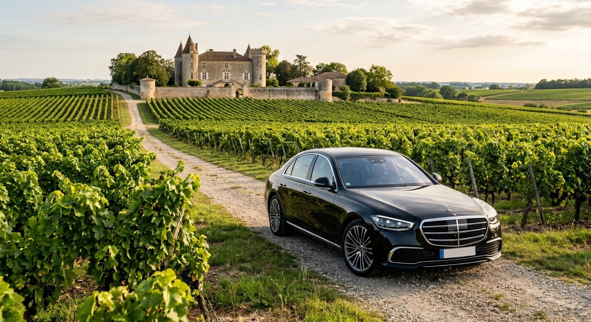
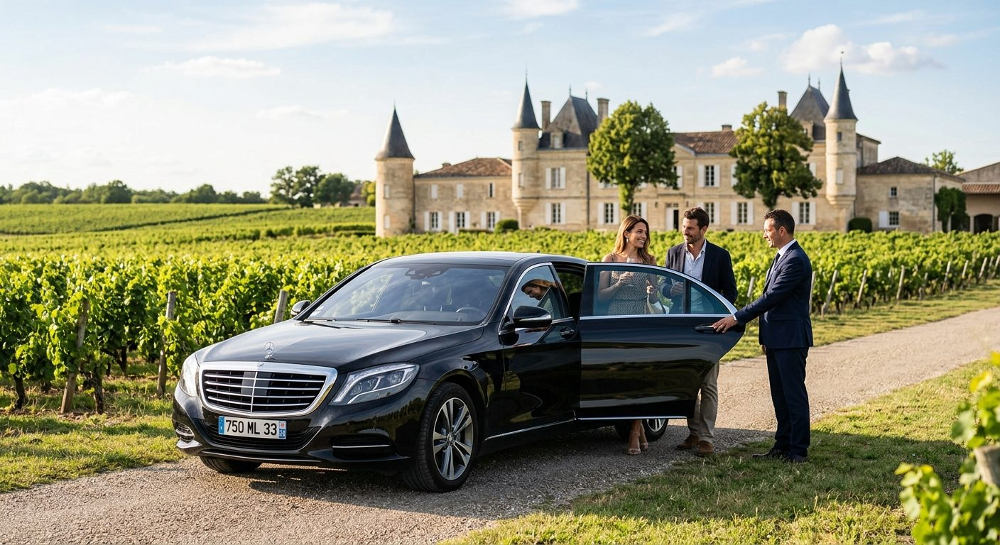

探索波尔多
专属司机如何改变您游览波尔多的方式

波尔多凭借其历史底蕴、美食与葡萄园，每年吸引着众多游客。 然而，在市区内出行却可能很快变得麻烦——拥堵的交通与紧张 的停车位，都会让体验大打折扣。选择专属司机服务，能将每一 次出行变成愉快、顺畅、井然有序的时刻。
轻松出行，无需操心
有了专属司机，在波尔多市区无压力出行成为可能。您不必再为 交通状况或市中心常常爆满的停车位而烦恼，在整个行程中都能 节省宝贵的时间。
波尔多的专属司机对交通干道及应对突发状况的替代路线了如指掌， 会灵活调整路线以确保准时高效。这项服务带来真正的安心感， 在每一次出行都至关重要的短暂游览中尤为可贵。
S级轿车的舒适，而非传统交通的压力
选择专属司机，也是选择舒适。专属司机用车提供宁静怡人的 环境，远离公共交通的喧嚣，也无需为寻找出租车而烦恼。 S级轿车宽敞的空间与静谧的车厢，让您尽情享受旅途。

专属司机让每一次出行都变成放松的时刻。您可以欣赏城市风光、 稍作休息，或只是静享车厢的宁静。豪华出行的意义正在于此—— 它切实提升了您整个旅程的体验。
传统交通与专属司机：真正的差异所在
表面上看，在波尔多出行有多种选择。但实际体验中，各种方式 之间存在明显差异。
| 出行考量 | 传统交通 | Lincoln Luxury |
|---|---|---|
| 出行安排与等待 | 等待时间难以预料，市中心停车困难。 | 在酒店、火车站或机场即刻接送。 |
| 车内舒适度 | 因车辆而异，空间往往有限。 | 奔驰S级轿车，真皮座椅，静谧宽敞，全程如一。 |
| 行程灵活性 | 行程一旦开始，路线与时间几乎无法调整。 | 行程实时灵活调整，停靠安排随您心意。 |
| 品酒之旅与品鉴 | 需自行驾车往返各酒庄之间。 | 品鉴期间尽享安心，路途完全交由司机掌控。 |
| 私密与宁静 | 公共空间，与其他乘客共处。 | 私密车厢，让您从容工作或放松，不受打扰。 |
以另一种方式，探索波尔多及其葡萄园
与专属司机一同游览波尔多，能让您超越普通的观光路线。您将 享有一份专属定制的行程，随心而定，每一站都个性化且灵活。

为期一天的专属司机服务，是探索周边地区的理想之选。一场 圣埃美隆品酒之旅 将带您走进顶级美酒的世界，距市区仅数分钟车程的 梅多克 与佩萨克-雷奥良 产区同样如此。您可以毫无顾虑地尽享品鉴之乐，由一位细致 周到的司机全程陪伴。
随您的行程灵活调整的安排
加龙河畔、证券交易所广场、被列入世界遗产名录的历史中心—— 波尔多既适合步行探索，也适合乘车游览，具体取决于所在街区 和可支配的时间。专属司机能让两者兼得：将您送至景点附近， 在约定时间等候或返回接您，再继续前往下一站——无论是市区 内，还是已然身处葡萄园之中。
这份灵活性，实实在在地改变了游览的方式：您无需再围绕公共 交通时刻表或停车位的可用性来安排行程。日程的设计始终以 您的意愿为中心，而非相反。
商务约会的得力伙伴
商务出行讲求严谨与高效，专属司机在这一场景中正是真正的 助力。行程途中，您可以处理工作、接打电话或准备会议。 波尔多的专属司机确保准时与私密，让您以最佳状态抵达每一场 约会。
这样的服务水准，也有助于在合作伙伴面前提升您的形象。每一次 出行都变得高效，不再有时间的浪费或不必要的压力。
专属司机，为您的重要时刻增添光彩
专属司机为您的各类活动增添了更多层次的意义。无论是婚礼、 晚宴还是特别的约会，出行本身也成为体验的一部分。乘坐优雅 的专属司机用车抵达现场，能瞬间提升整个场合的格调。

专属司机也会从始至终守护您的安全与舒适。您可以全心投入活动 本身，无需担心任何后勤安排——豪华出行由此融入一场真正 高端的整体体验。
专属司机的职责，远不止于驾驶。这是一项为每位客人量身 定制的服务。
每一段行程，都是一次个性化体验
每位客人的期待各不相同，专属司机也会随之调整服务方式。有人 偏爱安静，也有人愿意与司机交流，或是询问酒庄参观的建议。 服务的灵活性正是关键所在：准时、私密与细致入微，共同保证 了始终如一的高品质服务。
Lincoln Luxury，您在波尔多的专属司机
Lincoln Luxury 为个人与商务客户提供专属司机服务，座驾为 奔驰S级轿车——这是波尔多唯一提供此类服务的同级座驾。 无论是接送、活动还是全天游览，每一段行程都经过精心设计， 力求顺畅、优雅、毫无拘束。
常见问题
在波尔多选择专属司机有什么好处？
专属司机能简化您所有的出行，同时兼顾舒适、准时与安心，无论是在市区还是葡萄园中。
可以预订全天的专属司机服务吗？
可以，一整天的专属司机服务非常适合游览波尔多，并安排如品酒之旅这样的活动。
专属司机是否适合商务出行？
是的，波尔多的专属司机能帮助您充分利用时间，无论会议前后，都能保证高效舒适的出行。
专属司机服务是否可以个性化定制？
当然可以。每一项服务都会根据您的需求调整，无论是豪华出行、活动接送，还是葡萄园观光游览。
在圣让火车站或波尔多-梅里雅克机场如何接机／接站？
您的司机会直接在到达大厅或站台迎接您，负责搬运行李，并陪同您前往车辆。
为何选择 Lincoln Luxury 作为您在波尔多的出行伙伴？
Lincoln Luxury 提供以奔驰S级轿车为座驾的高端专属司机服务，行程量身定制，并始终恪守绝对的私密原则。